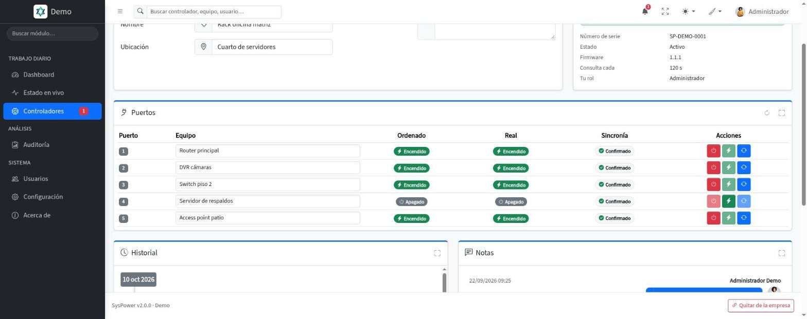
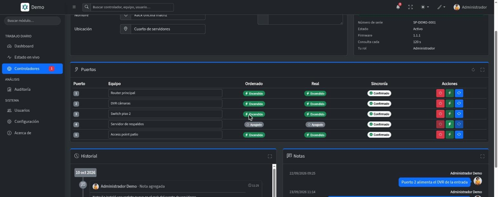
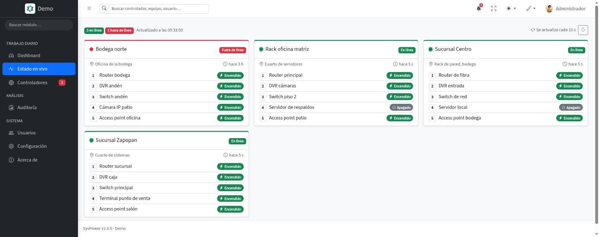
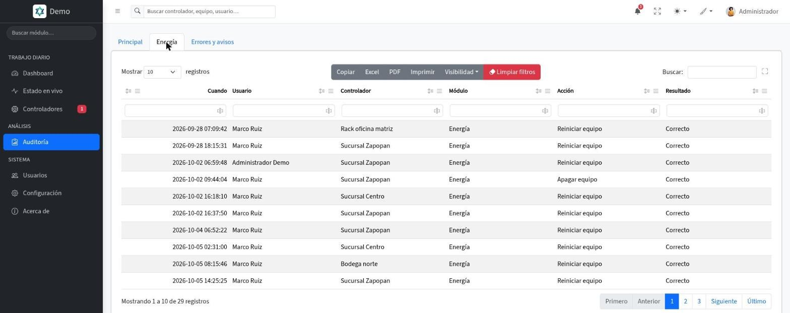
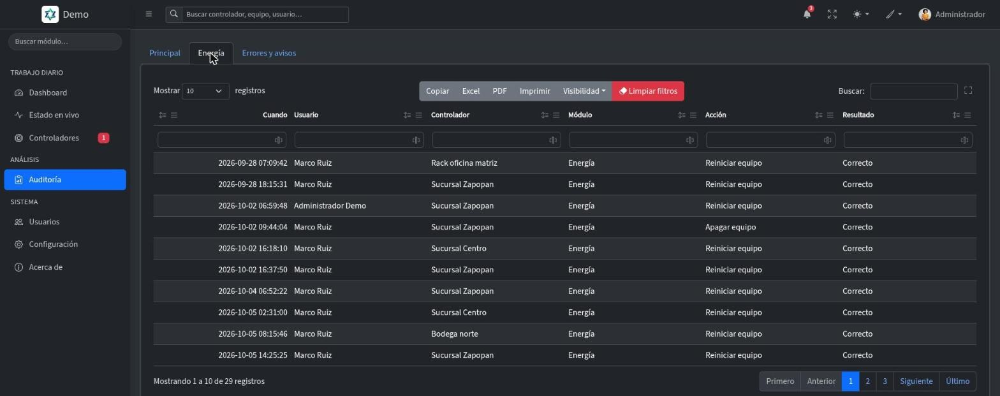

Reinicio físico remoto para equipos críticos
Tu router se congela a las 2 am. Lo reinicias en segundos.
SysPower controla físicamente la energía de tus equipos críticos desde cualquier navegador. Sin visitas, sin VPN, sin esperas.
- Hardware incluido en la renta
- Sin anticipo
- Sin VPN
Corte físico de energíaFunciona aunque el equipo esté completamente trabado y no responda a nada.
Qué es SysPower, para quién es y qué resuelve
Qué es
Un controlador y un panel web
Un controlador con cinco salidas de 120 V a 10 A que se instala en tu sitio, y un panel web desde el que apagas, enciendes y reinicias a distancia cada equipo conectado.
El hardware va incluido en la renta, sin anticipo ni compra inicial. El corte es físico: el relé interrumpe la corriente sin pasar por el sistema del equipo.
Para quién
Sitios con equipos que no pueden parar
Sucursales, oficinas y cuartos de servidores pequeños, y también integradores y sysadmins que instalan SysPower en el sitio de sus clientes.
Qué resuelve
Esperar a que alguien vaya a desconectarlo
Un router trabado, un DVR congelado o un servidor sin respuesta se reinician desde el navegador, a cualquier hora, sin visitas de emergencia.
Cómo funciona
Se instala una vez y queda listo para operar
El controlador se monta en tu sitio y cualquier usuario autorizado reinicia equipos en segundos desde el panel web, esté donde esté.
Apagar, encender y reiniciar
Tres acciones, un clic, desde cualquier lugar
El relé corta la corriente del equipo que elijas y la restaura cuando tú decides. Funciona aunque el equipo esté trabado y no responda a nada.
- Apagar: corta la energía al instante
Corta la energía del equipo seleccionado al instante.
- Encender: restaura cuando estés listo
Restaura la energía cuando estés listo para reiniciar.
- Reiniciar: ciclo completo con un clic
Apaga y enciende en secuencia automática con un solo clic.


Ficha del controlador: puertos y botones de energía
Salida por salida
Solo se corta lo que tú indicas
Cada controlador tiene cinco salidas de 120 V a 10 A. Cada una alimenta un equipo con su nombre, y reinicias solo el afectado, sin tocar el resto del sitio.
- Cinco salidas, cada equipo con su nombre
Router, DVR, switch, servidor: cada uno queda nombrado y listo para reinicio remoto desde el panel.
- Conexión por Ethernet o WiFi
El controlador reporta al panel por cable o por WiFi; no requiere VPN ni abrir puertos hacia el exterior.
- Relés industriales
El relé interrumpe la energía directamente: no depende del sistema operativo ni de la red del equipo.


Estado en vivo de todos tus controladores
Usuarios, historial y avisos
Quién, qué y cuándo, siempre a la vista
Cada persona usa su cuenta según su rol y cada acción queda registrada. Los avisos llegan a la campana del panel, los que tú elijas.
- Multiusuario con roles
Administrador, operador o visor: cada quien opera únicamente lo que su rol permite.
- Historial y trazabilidad
Registro de cada acción de energía, cada cambio y cada nota, con quién, qué y cuándo.
- Avisos y notas en cada controlador
Te avisa cuando un controlador se desconecta o vuelve y cuando alguien actúa sobre un equipo; las notas quedan en el propio controlador.


Historial de acciones por controlador
De la instalación a la operación, en cinco pasos
1 · Se instala en tu sitio
El controlador queda montado en el sitio y conectado a cada equipo crítico que quieras controlar.
2 · Asignas tus equipos
Router, DVR, switch, servidor: cada uno queda nombrado y listo para reinicio remoto desde el panel.
3 · Accedes desde donde estés
Abres el panel web en tu celular o computadora, sin VPN y sin apps adicionales.
4 · Reinicias con un clic
SysPower corta físicamente la energía del equipo afectado y la restaura, sin tocar los demás.
5 · Queda registro
El equipo arranca, el servicio se recupera y el historial registra la acción automáticamente.
Casos de uso
Escenarios donde SysPower marca la diferencia
Desde restaurantes hasta oficinas y cuartos de servidores: si tienes equipos críticos conectados, SysPower los mantiene bajo control.
Restaurante con sucursales: DVR de seguridad congelado
El dueño lo reinicia desde el celular en segundos, sin mover a nadie. Sin traslado y sin tiempo ciego.
Oficina corporativa: router o switch congelado a las 8 am
El sysadmin lo reinicia desde casa antes de salir. La oficina está lista cuando llega el equipo.
MikroTik o servidor pequeño: equipo trabado sin respuesta a SSH
Ningún software llega a un equipo congelado. SysPower corta la energía físicamente y la restaura.
Por qué SysPower
Cada minuto sin respuesta cuesta
Un router trabado, un DVR congelado, un servidor sin respuesta. Mientras alguien llega a desconectarlo y volverlo a conectar, tu operación está detenida y tus clientes esperan.
Con SysPower
Control real desde el primer día
Lo instalas una vez y queda listo para operar.
- Sin esperar a un técnico
Reinicias en segundos, a cualquier hora.
- Cero traslados por reinicios de rutina
Los ciclos de energía rutinarios se hacen desde el panel.
- Control preciso
Solo el equipo que elegiste, salida por salida.
- Tu cliente no nota la caída
Recuperas el servicio antes de que el impacto se sienta.
- Usuarios autorizados sin depender de terceros
Acceso multiusuario con roles; cada persona usa su cuenta según sus permisos.
- Historial auditable por cuenta
Quién, qué y cuándo de cada acción.
Sin control remoto
Lo que pasa hoy cuando un equipo se congela.
«Manda a alguien a reiniciarlo»
El equipo falló y la solución es esperar a que un técnico llegue, desconecte el cable y lo vuelva a enchufar. Cuesta caro y tarda horas.
«Pide a alguien que lo desconecte»
El empleado de turno desconecta el cable equivocado. Ahora hay dos problemas en vez de uno, y nadie sabe bien qué apagó.
Tiempo muerto real
Mientras el equipo no vuelve, se caen ventas, cámaras, acceso a sistemas y atención al cliente: todo lo que depende de esa conexión.
Fuera de horario no hay solución
El equipo se congela un sábado a la medianoche. Sin control remoto, el problema dura hasta que alguien pueda ir el lunes.
La diferencia SysPower
No ofrecemos solo un aparato, ofrecemos el servicio completo: controlador, panel, soporte y actualizaciones, con soporte directo del equipo que lo desarrolla.
Informes
Cuéntanos tu sitio y te enviamos los informes
SysPower se renta con el hardware incluido, sin anticipo ni compra inicial del equipo. Dinos cuántos sitios y equipos quieres controlar y te enviamos la propuesta.
El servicio completo, en una sola renta
El controlador con relés industriales, el panel web, el historial, el soporte y las actualizaciones, con garantía de hardware. Escríbenos, llámanos o usa WhatsApp: respondemos en horario hábil.
- Hardware incluido en la renta
- Sin anticipo ni compra inicial
- Panel web, historial, soporte y actualizaciones
- Garantía de hardware
Preguntas frecuentes
Lo que más nos preguntan sobre SysPower
¿Tienes otra duda? Escríbenos a soporte@alkes.mx.
¿Qué es SysPower?
Un controlador que se instala en tu sitio, con cinco salidas de 120 V a 10 A, y un panel web desde el que apagas, enciendes y reinicias a distancia los equipos conectados: routers, DVR, switches y servidores pequeños.
¿Qué pasa si un equipo está completamente trabado y no responde?
Es el escenario donde SysPower más ayuda. El corte es físico: el relé interrumpe la corriente del equipo sin pasar por su sistema. No importa si está congelado o colgado.
¿Cuánto cuesta?
SysPower no tiene planes publicados. Escríbenos a soporte@alkes.mx o llama al 333 946 0097: nos cuentas cuántos sitios y equipos quieres controlar y te enviamos los informes.
¿Qué incluye el servicio?
El controlador, el panel web, el historial, el soporte y las actualizaciones. El hardware va incluido en la renta, sin anticipo ni compra inicial del equipo, y tiene garantía.
¿Qué necesita el sitio para la instalación?
Una toma eléctrica estándar de 120 V, conexión a internet por cable (Ethernet) o WiFi y espacio para el controlador cerca de los equipos. No requiere VPN ni abrir puertos hacia el exterior.
¿Qué pasa si se cae el internet del sitio?
El controlador recibe las órdenes cuando reporta al panel. Si el enlace se cae, no llegan órdenes nuevas hasta que se restablece; entonces recuperas el control desde el panel.
¿Qué pasa si se va la luz en el sitio?
Si se va la luz, el sistema se reinicia solo cuando vuelve la energía.
¿Se puede operar el panel sin saber nada técnico?
Sí. Ves tus equipos con su nombre, eliges cuál reiniciar y listo. Cada usuario opera según su rol: administrador, operador o visor.
¿Queda registro de quién hizo qué?
Sí. Cada acción de energía, cada cambio y cada nota queda en el historial del controlador, con quién, qué y cuándo.
¿Qué pasa si el hardware se daña?
El servicio incluye garantía de hardware. Si el controlador falla, lo atendemos para restablecer la operación.
Soy integrador o sysadmin. ¿Cómo encaja SysPower en mis instalaciones?
Lo instalas en el sitio del cliente y queda disponible para su operación diaria, con acceso multiusuario y roles. Para conocer el modelo de distribución, escríbenos.
¿Puedo probarlo?
Sí, con el demo y sus credenciales de prueba. Su controlador es de ejemplo, sin un equipo real conectado.
Confianza
Un equipo con nombre, correo y teléfono
SysPower es un producto de Alkes. Nuestro equipo desarrolla, opera y da soporte al mismo sistema.
Corte físico, no lógico
El relé interrumpe la energía directamente, sin depender del sistema operativo ni de la red del equipo.
Salida por salida
Reinicias solo el equipo afectado, sin cortar nada más del sitio.
Producto terminado
Con garantía, actualizaciones y soporte incluidos en la renta.
Permisos por rol
Administrador, operador o visor: cada persona opera lo que su rol permite.
Soporte del equipo que construye SysPower
Nuestro equipo desarrolla, opera y da soporte a SysPower de principio a fin. Para soporte técnico, una demostración guiada o un módulo a la medida, hablas directamente con el equipo que construye el sistema.
Novedades
El panel se mueve, y queda por escrito
Historial público de versiones: lo que se entregó, cuándo y qué cambia en tu operación diaria.
v2.2.0 Controlador inactivo, solo consulta 26 oct 2026
- Sin acciones por error
Un controlador inactivo se puede consultar, imprimir y enviar, pero no encender, apagar, reiniciar ni modificar.
v2.1.6 Foto de perfil y logo más grandes 23 oct 2026
- Imágenes de mayor tamaño
La foto de perfil y el logo de la empresa aceptan archivos más pesados.
- Archivos mejor protegidos
Las carpetas de archivos ya no se pueden abrir sin iniciar sesión.
v2.1.5 El visor de PDF funciona en el celular 16 oct 2026
- PDF dentro del mismo visor
En Chrome para Android y otros navegadores sin visor propio, el PDF ahora se ve en el modal, página por página, con su botón Descargar.
v2.1.4 «Recuérdame» en hasta 5 equipos 16 oct 2026
- Cada equipo se recuerda por separado
Puedes recordar hasta 5 equipos a la vez; al recordar el sexto se olvida el que lleva más tiempo sin usarse.
- Lista en Mi perfil
En Mi perfil › Seguridad ves tus equipos recordados con navegador, sistema, IP y último uso, y puedes olvidar el que quieras.
- Más seguro
Cerrar sesión olvida solo ese equipo, y cambiar la contraseña o dar de baja a un usuario olvida sus equipos recordados. Cada persona inicia sesión una vez más y vuelve a marcar «Recordarme».
v2.1.3 Recuperar contraseña y acceso desde el celular 16 oct 2026
- Recupera tu contraseña desde el acceso
Escribes tu correo, recibes un código de 6 dígitos que vence a los 15 minutos y con él pones tu contraseña nueva.
- Acceso cómodo en el celular
La pantalla de acceso se ajusta a cualquier tamaño, en vertical y en horizontal, sin hacer scroll ni tapar la tarjeta con el teclado.
v2.1.2 Tablas con el mismo control de orden 15 oct 2026
- Un solo control de orden
El modal de selección ordena con el mismo menú que el resto de las tablas.
v2.1.1 Botones iguales y en el mismo orden en todos los módulos 15 oct 2026
- Cada botón, siempre del mismo color
Guardar y Borrador en azul, Procesar en verde, Cancelar y Eliminar en rojo, todas las autorizaciones en amarillo, Imprimir y Regresar en gris. Los mismos colores en todos los módulos.
- Siempre en el mismo orden
De izquierda a derecha, por relevancia: primero guardar, luego las acciones, las cancelaciones y las autorizaciones. Al extremo derecho van Enviar, Información y Regresar.
- Sin menús escondidos
Todos los botones están a la vista, uno por uno, rellenos y con su ícono. Ya no hay botones de solo contorno ni menús «Más».
- Mejor en el celular
En pantallas chicas los botones muestran solo su ícono para que quepan, y la acción principal conserva su texto.
- El botón de correo, más corto
Ahora se llama simplemente Enviar.
v2.1.0 Envía la ficha de un controlador por correo 15 oct 2026
- De la ficha al correo
Con el botón Enviar mandas la ficha de un controlador: sus puertos, comandos y conexiones recientes. El PDF va como archivo adjunto.
- Revisas antes de enviar
Una ventana te deja escribir los destinatarios, ajustar el asunto y el mensaje, y elegir qué secciones incluye el PDF.
- Con el nombre de tu empresa
El correo sale a nombre de tu empresa, con tu firma y tu pie. Las respuestas llegan al correo que elijas.
- Con tu propio servidor de correo
Si lo prefieres, configura el servidor de correo de tu empresa para que los envíos salgan desde tu dominio y sin el límite de uso justo.
v2.0.3 Formularios más claros, con ícono en cada campo 14 oct 2026
- Un ícono en cada campo
Cada dato que capturas lleva su ícono al lado izquierdo, para reconocer de un vistazo qué se pide.
- Nombre y campo en la misma línea
El nombre del campo queda a la izquierda y el campo a su derecha, en todos los formularios y ventanas.
- Tarjetas con título e ícono
Cada bloque de una pantalla se identifica con su ícono y su título.
- Configuración y datos para facturar con el mismo orden
Las pantallas de Configuración, suscripción y datos para facturar siguen el mismo acomodo que el resto del sistema.
v2.0.2 Ficha del controlador en PDF 14 oct 2026
- Un documento por controlador
Su estado en línea, firmware, última conexión y tiempo de funcionamiento, con el estado de cada puerto y el equipo que alimenta.
- Comandos, conexiones y notas
Si quieres, también sus últimos comandos de energía, sus últimas conexiones y las notas del controlador. No incluye las credenciales del dispositivo.
- Tú eliges qué incluye
El botón Imprimir, en la ficha del controlador, abre una ventana donde marcas las secciones y ves cuántos elementos tiene cada una. Recuerda tu última elección.
- Se ve sin salir de la pantalla
El PDF se abre en una ventana, con la opción de descargarlo. Arriba lleva el logo y el nombre de tu empresa; SysPower aparece solo como un crédito discreto al pie.
v2.0.1 Una cuenta, un usuario y un controlador 13 oct 2026
- Cada cuenta incluye su controlador
Una cuenta corresponde a una empresa, un usuario y un controlador. Cada controlador nuevo es una cuenta nueva.
- Sin roles ni módulo de usuarios
El usuario de la cuenta tiene todos los permisos, así que no hay nada que configurar.
v2.0.0 Panel renovado, estado en vivo, avisos y notas en cada controlador 12 oct 2026
- Panel renovado de punta a punta
El encabezado, el menú y el pie se quedan fijos mientras trabajas, y el panel se usa igual de cómodo en el celular que en la computadora. Tema claro, oscuro o automático, 20 colores de énfasis y un modo compacto.
- Estado en vivo
Todos tus controladores en una sola pantalla: si están en línea, cuándo reportaron por última vez y cómo está cada puerto. Se actualiza sola cada 10 segundos y los que están fuera de línea salen primero.
- Avisos en la campana, los que tú elijas
Te avisa cuando un controlador se desconecta o vuelve, cuando alguien apaga, enciende o reinicia un equipo y cuando dejan una nota. Un interruptor por tipo de aviso decide cuáles recibes.
- Notas en cada controlador
Qué equipo alimenta cada puerto o qué se hizo en la última visita queda escrito en el propio controlador, como una conversación. Se envía con Enter.
- La ficha del controlador, completa
Sus puertos con el estado ordenado y el real, botones de energía que solo se habilitan cuando tienen sentido, su conexión y su historial en línea de tiempo. Se imprime como documento.
- Un dashboard que dice qué atender
Controladores en línea y fuera de línea, acciones de energía del día, equipos encendidos y la actividad reciente, cada uno con su acceso directo.
- Búsqueda en todo el panel
Escribe un controlador, el nombre de un equipo o un usuario en la barra de arriba, desde cualquier pantalla. Solo aparece lo que tú puedes abrir.
- Manual de usuario dentro del panel
La ayuda se abre en la sección de la pantalla donde estás, desde el menú de tu nombre.
- Más seguridad
Se reforzó la protección de las sesiones y de cada acción, y los permisos de cada rol se revisan en todas las pantallas.
v1.0.0 Primera versión de SysPower jun 2026
- Apaga, enciende y reinicia a distancia
Desde el panel ordenas el cambio de un equipo del sitio, como un router, un DVR, un switch o un servidor.
- Un controlador por sitio
Cada controlador tiene 5 puertos, y cada puerto alimenta un equipo. El controlador aplica la orden en su siguiente reporte.
- Alta con número de serie
Registras tu controlador escribiendo su número de serie.
- Varias empresas
Cada empresa ve solo sus controladores.
Empieza hoy
¿Listo para tomar el control de tus equipos críticos?
Entra al demo con las credenciales de prueba, o escríbenos y te enviamos los informes para tu sitio.
Contacto
Hablemos
Informes, demostraciones guiadas, soporte técnico o integración de módulos adicionales. Tu mensaje llega a una bandeja real.
Ecosistema Alkes
SysPower no está solo
Cinco productos desarrollados, alojados y operados por Alkes. Mismo soporte, misma casa.